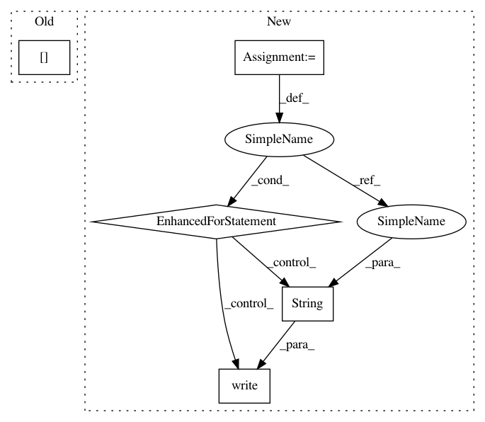

d9748278abf04a9c74a95053fda62d0bff8b9f93,t2t_csaky/utils/run.py,,experiment,#,136
Before Change
"/base_with_numbers/filtered_data/hash_jaccard/" +
str(source_cluster) + "-" + str(target_cluster) + "_filtering")
FLAGS["data_dir"] = "data_dir/" + dataset + "/base_with_numbers"
data_filtering()
After Change
def experiment():
// overwrite the checkpoint file
ckpt_list = [22001, 33001, 44001, 66001, 88001, 109001, 142001, 175001, 218001, 225001]
for ckpt in ckpt_list:
with open(FLAGS["train_dir"] + "/checkpoint", "w") as ckpt_file:
ckpt_file.write("model_checkpoint_path: "model.ckpt-" + str(ckpt) + """)
FLAGS["output_file_name"] = "dev_set_" + str(ckpt) + ".txt"
decoding()
// Run some command line stuff, and get the output in real-time.
def run_command(command=["t2t-datagen",
"--t2t_usr_dir=" + FLAGS["t2t_usr_dir"],
"--data_dir=" + FLAGS["data_dir"],
"--problem=" + FLAGS["problem"]]):
In pattern: SUPERPATTERN
Frequency: 3
Non-data size: 5
Instances
Project Name: ricsinaruto/Seq2seqChatbots
Commit Name: d9748278abf04a9c74a95053fda62d0bff8b9f93
Time: 2019-02-16
Author: ricsinaruto@hotmail.com
File Name: t2t_csaky/utils/run.py
Class Name:
Method Name: experiment
Project Name: ricsinaruto/Seq2seqChatbots
Commit Name: d9748278abf04a9c74a95053fda62d0bff8b9f93
Time: 2019-02-16
Author: ricsinaruto@hotmail.com
File Name: t2t_csaky/utils/run.py
Class Name:
Method Name: experiment
Project Name: geekcomputers/Python
Commit Name: 3dfdfaa6db730f66bdff5155320d4c4ee5d5b29c
Time: 2020-09-20
Author: markhappy200@gmail.com
File Name: EncryptionTool.py
Class Name:
Method Name:
Project Name: geekcomputers/Python
Commit Name: 3dfdfaa6db730f66bdff5155320d4c4ee5d5b29c
Time: 2020-09-20
Author: markhappy200@gmail.com
File Name: EncryptionTool.py
Class Name:
Method Name: readAndDecryptAndSave